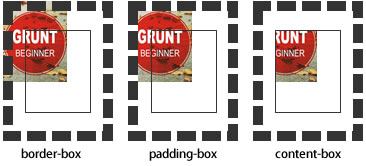

用来将背景图片做适当的裁剪以适应实际需要。 语法：
background-clip ： border-box | padding-box | content-box | no-clip
参数分别表示从边框、或内填充，或者内容区域向外裁剪背景。 no-clip表示不裁切，和参数border-box显示同样的效果。 backgroud-clip默认值为border-box 效果如下图所示：

范例:
padding
content